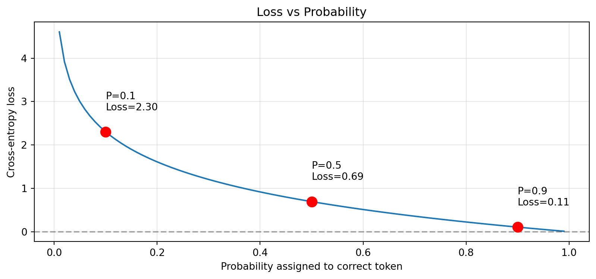
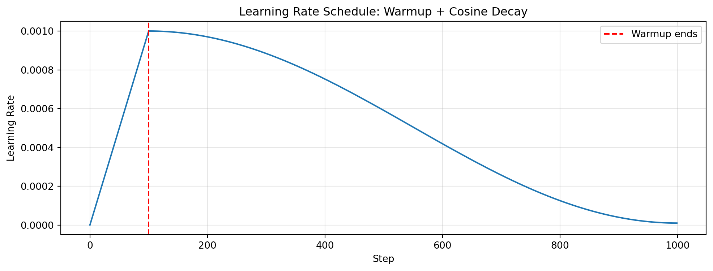
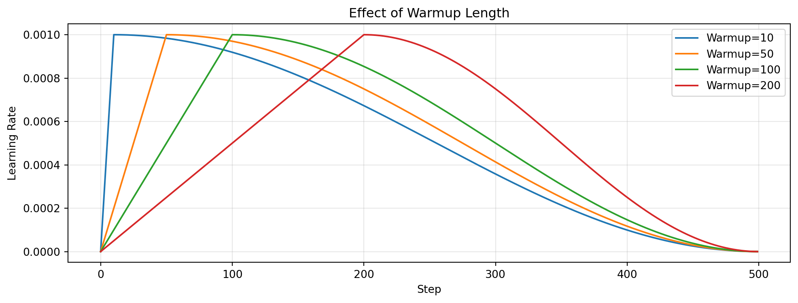
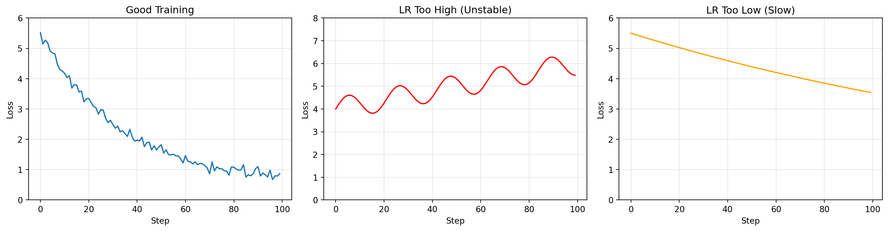
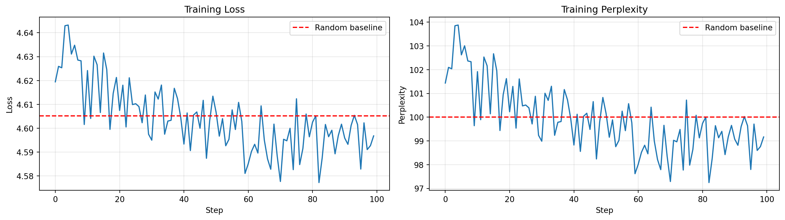
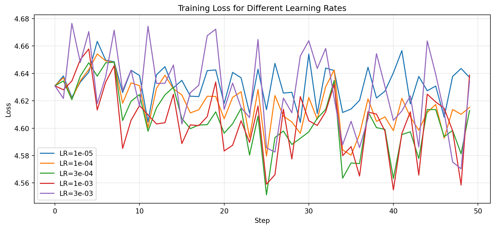

%%{init: {'theme': 'base', 'themeVariables': {'fontSize': '14px'}}}%%
flowchart TB
subgraph loop["Training Loop"]
G[Zero Gradients<br/>optimizer.zero_grad()] --> A[Forward Pass<br/>logits = model(input_ids)]
A --> B[Compute Loss<br/>loss = cross_entropy(logits, targets)]
B --> C[Backward Pass<br/>loss.backward()]
C --> D[Gradient Clipping<br/>clip_grad_norm_(params, 1.0)]
D --> E[Optimizer Step<br/>optimizer.step()]
E --> F[Update LR<br/>scheduler.step()]
F --> G
end
Module 07: Training
Introduction
Training a language model means teaching it to predict the next token. We do this through an iterative process:
- Computing loss: How wrong are our predictions?
- Computing gradients: Which direction should we adjust weights?
- Updating weights: Take a small step in that direction
- Repeat: Until the model gets good at prediction
In this module, we’ll explore cross-entropy loss, the AdamW optimizer, learning rate scheduling, gradient accumulation, and checkpointing.
The Training Objective
Language models are trained with next-token prediction:
Input: [The, cat, sat, on, the]
Target: [cat, sat, on, the, mat]
For each position, predict the next token.The loss function measures how well the model predicts: Cross-entropy between predicted probabilities and actual next tokens.
\[\text{loss} = -\sum \log(P(\text{correct\_token}))\]
Lower loss means the model assigns higher probability to correct tokens, which means better predictions.
The Training Loop
The training loop is the core of how neural networks learn:
Note: zero_grad() can be called either at the start or end of each iteration. Calling it at the start (shown above) is common because it ensures gradients are fresh before the backward pass.
Setup
import sys
import math
from pathlib import Path
import torch
import torch.nn as nn
import torch.nn.functional as F
import matplotlib.pyplot as plt
import numpy as np
# For reproducibility
torch.manual_seed(42)
# Display device info
device = "mps" if torch.backends.mps.is_available() else "cuda" if torch.cuda.is_available() else "cpu"
print(f"PyTorch version: {torch.__version__}")
print(f"Device: {device}")PyTorch version: 2.9.1
Device: mpsCross-Entropy Loss
The loss function measures how wrong our predictions are. Cross-entropy loss penalizes wrong predictions more heavily when the model is confident but incorrect.
Why cross-entropy?
- Probabilistic interpretation: It measures the “surprise” when the true token appears
- Gradient properties: Gradients are proportional to the error (predicted - actual)
- Information theory: Minimizing cross-entropy = maximizing likelihood of data
Mathematical formulation:
\[\text{CrossEntropy}(p, q) = -\sum_{i} p_i \log(q_i)\]
For language modeling with one-hot targets (only one correct token), this simplifies to:
\[\text{Loss} = -\log(q_{\text{correct}})\]
where \(q_{\text{correct}}\) is the probability the model assigns to the correct token.
# Example: Model predicting next token
vocab_size = 10
# Model outputs logits (raw scores)
logits = torch.tensor([
[-1.0, 0.5, 2.0, -0.5, 1.0, 0.0, -1.5, 0.3, -0.8, 0.2] # scores for each token
])
# True next token is index 2
target = torch.tensor([2])
# Convert to probabilities
probs = F.softmax(logits, dim=-1)
print("Logits (raw model output):")
print(f" {logits[0].tolist()}")
print(f"\nProbabilities (after softmax):")
print(f" {[f'{p:.3f}' for p in probs[0].tolist()]}")
print(f"\nTarget token: {target.item()}")
print(f"Probability assigned to target: {probs[0, target.item()]:.4f}")Logits (raw model output):
[-1.0, 0.5, 2.0, -0.5, 1.0, 0.0, -1.5, 0.30000001192092896, -0.800000011920929, 0.20000000298023224]
Probabilities (after softmax):
['0.022', '0.097', '0.435', '0.036', '0.160', '0.059', '0.013', '0.080', '0.026', '0.072']
Target token: 2
Probability assigned to target: 0.4353# Cross-entropy loss
loss = F.cross_entropy(logits, target)
manual_loss = -torch.log(probs[0, target.item()])
print(f"Cross-entropy loss: {loss.item():.4f}")
print(f"Manual calculation: -log({probs[0, target.item()]:.4f}) = {manual_loss.item():.4f}")
# Perplexity
perplexity = math.exp(loss.item())
print(f"\nPerplexity: {perplexity:.2f}")Cross-entropy loss: 0.8317
Manual calculation: -log(0.4353) = 0.8317
Perplexity: 2.30Let’s visualize how loss changes with probability:
# Loss for different predictions
probs_range = np.linspace(0.01, 0.99, 100)
losses = -np.log(probs_range)
plt.figure(figsize=(10, 4))
plt.plot(probs_range, losses)
plt.xlabel('Probability assigned to correct token')
plt.ylabel('Cross-entropy loss')
plt.title('Loss vs Probability')
plt.grid(True, alpha=0.3)
plt.axhline(y=0, color='k', linestyle='--', alpha=0.3)
# Mark some points
for p in [0.1, 0.5, 0.9]:
plt.plot(p, -np.log(p), 'ro', markersize=10)
plt.annotate(f'P={p}\nLoss={-np.log(p):.2f}', (p, -np.log(p)+0.5))
plt.show()
print("Higher probability -> Lower loss -> Better predictions!")
Higher probability -> Lower loss -> Better predictions!Perplexity
Perplexity is a more intuitive measure than raw loss:
\[\text{Perplexity} = e^{\text{cross\_entropy\_loss}}\]
Interpretation: “The model is as confused as if it were choosing uniformly among N options.”
| Loss | Perplexity | Interpretation |
|---|---|---|
| 0.0 | 1.0 | Perfect predictions |
| 2.3 | 10 | ~10 equally likely options |
| 4.6 | 100 | ~100 equally likely options |
| 6.9 | 1000 | Random guessing (vocab=1000) |
For reference: - GPT-2 on WebText: ~20 perplexity - Human baseline: ~10-20 perplexity (depends on domain)
Learning Rate Schedule
We don’t use a constant learning rate. Instead, we use warmup followed by cosine decay:
flowchart LR
subgraph schedule["Learning Rate Schedule"]
W["Warmup Phase<br/>Linear increase<br/>0 -> max_lr"] --> P["Peak<br/>max_lr"]
P --> D["Decay Phase<br/>Cosine decay<br/>max_lr -> min_lr"]
end
Why warmup? - Early training is unstable with large LR - Gradients are noisy before weights settle - Small LR lets model “get its bearings”
Why decay? - Large LR is good for exploration early - Small LR is good for fine-tuning later - Cosine is smooth (no sudden changes)
class CosineScheduler:
"""Learning rate scheduler with linear warmup and cosine decay."""
def __init__(self, optimizer, warmup_steps, total_steps, min_lr=0.0):
self.optimizer = optimizer
self.warmup_steps = warmup_steps
self.total_steps = total_steps
self.min_lr = min_lr
self.base_lr = optimizer.param_groups[0]['lr']
self.current_step = 0
def get_lr(self):
"""Calculate learning rate for current step."""
if self.current_step < self.warmup_steps:
# Linear warmup
return self.base_lr * self.current_step / max(1, self.warmup_steps)
elif self.current_step >= self.total_steps:
return self.min_lr
else:
# Cosine decay
progress = (self.current_step - self.warmup_steps) / max(
1, self.total_steps - self.warmup_steps
)
cosine = 0.5 * (1 + math.cos(math.pi * progress))
return self.min_lr + (self.base_lr - self.min_lr) * cosine
def step(self):
"""Update learning rate."""
lr = self.get_lr()
for param_group in self.optimizer.param_groups:
param_group['lr'] = lr
self.current_step += 1
return lr
# Create scheduler
model = nn.Linear(10, 10)
optimizer = torch.optim.Adam(model.parameters(), lr=1e-3)
scheduler = CosineScheduler(
optimizer,
warmup_steps=100,
total_steps=1000,
min_lr=1e-5
)
# Collect LRs over training
lrs = []
for _ in range(1000):
lrs.append(scheduler.get_lr())
scheduler.step()
plt.figure(figsize=(12, 4))
plt.plot(lrs)
plt.xlabel('Step')
plt.ylabel('Learning Rate')
plt.title('Learning Rate Schedule: Warmup + Cosine Decay')
plt.axvline(x=100, color='r', linestyle='--', label='Warmup ends')
plt.legend()
plt.grid(True, alpha=0.3)
plt.show()
print(f"Initial LR: {lrs[0]:.6f}")
print(f"After warmup (step 100): {lrs[100]:.6f}")
print(f"Final LR: {lrs[-1]:.6f}")
Initial LR: 0.000000
After warmup (step 100): 0.001000
Final LR: 0.000010Let’s compare different warmup lengths:
fig, ax = plt.subplots(figsize=(12, 4))
for warmup in [10, 50, 100, 200]:
optimizer = torch.optim.Adam(model.parameters(), lr=1e-3)
scheduler = CosineScheduler(optimizer, warmup_steps=warmup, total_steps=500)
lrs = []
for _ in range(500):
lrs.append(scheduler.get_lr())
scheduler.step()
ax.plot(lrs, label=f'Warmup={warmup}')
ax.set_xlabel('Step')
ax.set_ylabel('Learning Rate')
ax.set_title('Effect of Warmup Length')
ax.legend()
ax.grid(True, alpha=0.3)
plt.show()
AdamW Optimizer
AdamW is Adam with decoupled weight decay (proper L2 regularization). It’s the standard optimizer for training language models.
Why AdamW over SGD or Adam?
- SGD: Requires careful learning rate tuning per layer, slow convergence
- Adam: Weight decay is applied to gradients (incorrect for L2 regularization)
- AdamW: Decouples weight decay from gradient updates (mathematically correct)
%%{init: {'theme': 'base', 'themeVariables': {'fontSize': '14px'}}}%%
flowchart TB
subgraph adam["AdamW Update"]
G[Gradient g] --> M["Momentum<br/>m = beta1 * m + (1-beta1) * g"]
G --> V["Adaptive LR<br/>v = beta2 * v + (1-beta2) * g^2"]
M --> BC["Bias Correction"]
V --> BC
BC --> U["Update<br/>theta = theta - lr * (m_hat / sqrt(v_hat) + lambda * theta)"]
end
Hyperparameters explained:
| Parameter | Default | Purpose |
|---|---|---|
| beta1 | 0.9 | Momentum coefficient - smooths gradient direction |
| beta2 | 0.999 | Adaptive LR coefficient - smooths gradient magnitude |
| epsilon | 1e-8 | Numerical stability (prevents division by zero) |
| weight_decay | 0.01 | L2 regularization strength |
Practical tip: The LLM community has converged on beta1=0.9, beta2=0.95 for large models (used by LLaMA, GPT-3). The lower beta2 adapts faster to changing gradient magnitudes.
# Creating an AdamW optimizer
model = nn.Linear(100, 10)
optimizer = torch.optim.AdamW(
model.parameters(),
lr=3e-4, # Learning rate
betas=(0.9, 0.999), # Momentum and adaptive LR
weight_decay=0.01 # Regularization
)
print("AdamW optimizer created")
print(f" Learning rate: {optimizer.param_groups[0]['lr']}")
print(f" Weight decay: {optimizer.param_groups[0]['weight_decay']}")AdamW optimizer created
Learning rate: 0.0003
Weight decay: 0.01Gradient Accumulation
Want a larger effective batch size without more memory? Use gradient accumulation!
Problem: Want batch_size=32 but only 8 fits in memory
Solution: Accumulate gradients over 4 mini-batches
flowchart LR
subgraph accum["Gradient Accumulation (4 steps)"]
B1["Mini-batch 1<br/>loss.backward()"] --> A["Accumulated<br/>Gradients"]
B2["Mini-batch 2<br/>loss.backward()"] --> A
B3["Mini-batch 3<br/>loss.backward()"] --> A
B4["Mini-batch 4<br/>loss.backward()"] --> A
A --> O["optimizer.step()<br/>One update after all 4"]
end
# Demonstrate gradient accumulation
model = nn.Linear(10, 1)
accumulation_steps = 4
# Simulate accumulated gradients
total_loss = 0
for i in range(accumulation_steps):
x = torch.randn(8, 10) # Mini-batch
y = model(x)
loss = y.mean() / accumulation_steps # Scale loss!
loss.backward() # Gradients accumulate
total_loss += loss.item()
print(f"Accumulated loss (4 mini-batches): {total_loss:.4f}")
print(f"Gradient norm before step: {model.weight.grad.norm().item():.4f}")
# Now do one optimizer step
optimizer = torch.optim.SGD(model.parameters(), lr=0.1)
optimizer.step()
optimizer.zero_grad()
print("After optimizer.step() and zero_grad()")Accumulated loss (4 mini-batches): -0.2778
Gradient norm before step: 0.5734
After optimizer.step() and zero_grad()Gradient Clipping
Gradient clipping prevents exploding gradients by scaling down gradients when their norm exceeds a threshold.
# Demonstrate gradient clipping
model = nn.Linear(10, 10)
# Create artificial large gradients
for p in model.parameters():
p.grad = torch.randn_like(p) * 100 # Very large!
# Compute gradient norm before clipping
total_norm_before = 0
for p in model.parameters():
total_norm_before += p.grad.norm().item() ** 2
total_norm_before = total_norm_before ** 0.5
print(f"Gradient norm before clipping: {total_norm_before:.2f}")
# Clip gradients
torch.nn.utils.clip_grad_norm_(model.parameters(), max_norm=1.0)
# Compute gradient norm after
total_norm_after = 0
for p in model.parameters():
total_norm_after += p.grad.norm().item() ** 2
total_norm_after = total_norm_after ** 0.5
print(f"Gradient norm after clipping: {total_norm_after:.2f}")
print(f"\nGradients scaled down by {total_norm_before / total_norm_after:.1f}x")Gradient norm before clipping: 946.03
Gradient norm after clipping: 1.00
Gradients scaled down by 946.0xWhen to use gradient clipping:
- Always for transformer training (standard practice)
- max_norm=1.0 is a good default
- Monitor gradient norms during training - consistently high norms suggest instability
Batch Size Considerations
Batch size affects both training dynamics and memory usage:
Tradeoffs:
| Aspect | Small Batch | Large Batch |
|---|---|---|
| Memory | Less | More |
| Gradient noise | More (regularization effect) | Less (stable gradients) |
| Convergence | May generalize better | Faster convergence |
| LR needed | Lower | Higher (linear scaling rule) |
The Linear Scaling Rule: When you double the batch size, you can double the learning rate. This maintains similar training dynamics.
Effective batch size = batch_size x gradient_accumulation_steps
# Batch size vs memory example (conceptual)
print("Memory usage scales linearly with batch size:")
print()
for batch_size in [8, 16, 32, 64]:
# Simulated memory calculation
tokens_per_batch = batch_size * 512 # sequence length
memory_mb = batch_size * 50 # ~50MB per sample for a small model
print(f" Batch size {batch_size:2d}: ~{tokens_per_batch:,} tokens/batch, ~{memory_mb}MB")Memory usage scales linearly with batch size:
Batch size 8: ~4,096 tokens/batch, ~400MB
Batch size 16: ~8,192 tokens/batch, ~800MB
Batch size 32: ~16,384 tokens/batch, ~1600MB
Batch size 64: ~32,768 tokens/batch, ~3200MBMixed Precision Training
Modern GPUs/TPUs can perform faster computation with lower precision numbers (fp16/bf16) while maintaining training quality.
Precision types:
| Type | Bits | Range | Use Case |
|---|---|---|---|
| fp32 | 32 | Large | Default, master weights |
| fp16 | 16 | Limited | Faster compute, risk of overflow |
| bf16 | 16 | Large (like fp32) | Best of both worlds |
How mixed precision works:
- Keep master weights in fp32 (full precision)
- Cast to fp16/bf16 for forward/backward pass (fast)
- Compute gradients in fp16/bf16
- Update master weights in fp32 (accurate)
# Mixed precision example (conceptual - requires GPU)
print("Mixed Precision Training:")
print()
# Simulated speedup
print("Speedups on modern hardware:")
print(" - A100 GPU with bf16: ~2x faster than fp32")
print(" - H100 GPU with fp8: ~3x faster than fp32")
print()
# PyTorch autocast usage
print("PyTorch usage:")
print("""
from torch.cuda.amp import autocast, GradScaler
scaler = GradScaler()
for batch in dataloader:
optimizer.zero_grad()
# Forward pass in mixed precision
with autocast():
logits = model(input_ids)
loss = F.cross_entropy(logits, targets)
# Backward pass with gradient scaling
scaler.scale(loss).backward()
scaler.step(optimizer)
scaler.update()
""")Mixed Precision Training:
Speedups on modern hardware:
- A100 GPU with bf16: ~2x faster than fp32
- H100 GPU with fp8: ~3x faster than fp32
PyTorch usage:
from torch.cuda.amp import autocast, GradScaler
scaler = GradScaler()
for batch in dataloader:
optimizer.zero_grad()
# Forward pass in mixed precision
with autocast():
logits = model(input_ids)
loss = F.cross_entropy(logits, targets)
# Backward pass with gradient scaling
scaler.scale(loss).backward()
scaler.step(optimizer)
scaler.update()
Practical advice:
- Use bf16 if available (A100, H100) - it has the same dynamic range as fp32
- Use fp16 with gradient scaling on older GPUs (V100)
- Apple Silicon (MPS) does not yet fully support mixed precision
Distributed Training Basics
Training large models requires multiple GPUs. Here’s a brief overview:
Data Parallel (DP/DDP):
- Same model copied to all GPUs
- Each GPU processes different data
- Gradients are averaged across GPUs
- Memory per GPU = full model size
%%{init: {'theme': 'base', 'themeVariables': {'fontSize': '14px'}}}%%
flowchart LR
subgraph dp["Data Parallel"]
D["Data Batch"] --> D1["Batch 1"]
D --> D2["Batch 2"]
D --> D3["Batch 3"]
D1 --> G1["GPU 0<br/>Full Model"]
D2 --> G2["GPU 1<br/>Full Model"]
D3 --> G3["GPU 2<br/>Full Model"]
G1 --> A["AllReduce<br/>Average Gradients"]
G2 --> A
G3 --> A
end
Fully Sharded Data Parallel (FSDP):
- Model is sharded across GPUs
- Each GPU holds a fraction of parameters
- Memory per GPU = model_size / num_gpus
- Enables training models larger than single GPU memory
# Distributed training concepts
print("Distributed Training Strategies:")
print()
print("1. Data Parallel (DDP):")
print(" - Best for: Models that fit in one GPU")
print(" - Scales: Batch size (effective_batch = batch * num_gpus)")
print()
print("2. Fully Sharded Data Parallel (FSDP):")
print(" - Best for: Large models (>10B parameters)")
print(" - Scales: Model size and batch size")
print()
print("3. Pipeline Parallel:")
print(" - Best for: Very deep models")
print(" - Splits model layers across GPUs")
print()
print("4. Tensor Parallel:")
print(" - Best for: Models with large layers")
print(" - Splits individual layers across GPUs")Distributed Training Strategies:
1. Data Parallel (DDP):
- Best for: Models that fit in one GPU
- Scales: Batch size (effective_batch = batch * num_gpus)
2. Fully Sharded Data Parallel (FSDP):
- Best for: Large models (>10B parameters)
- Scales: Model size and batch size
3. Pipeline Parallel:
- Best for: Very deep models
- Splits model layers across GPUs
4. Tensor Parallel:
- Best for: Models with large layers
- Splits individual layers across GPUsTraining Stability and Failure Modes
Understanding common failure modes helps you debug training issues:
Loss = NaN or Inf
Causes: - Learning rate too high - Gradient explosion - Numerical overflow in fp16
Solutions: - Reduce learning rate (try 10x smaller) - Add gradient clipping - Use bf16 instead of fp16 or add gradient scaling
Loss stuck at high value
Causes: - Learning rate too low - Poor weight initialization - Data loading bug (same batch every time)
Solutions: - Increase learning rate - Check data loader with small sample - Verify model architecture
Loss oscillates or increases
Causes: - Learning rate too high - Batch size too small - Bug in loss computation
Solutions: - Add warmup period - Reduce learning rate - Use gradient accumulation
# Visualize training pathologies
fig, axes = plt.subplots(1, 3, figsize=(15, 4))
steps = np.arange(100)
# Good training
ax = axes[0]
good_loss = 5.0 * np.exp(-0.03 * steps) + 0.5 + 0.1 * np.random.randn(100)
ax.plot(steps, good_loss)
ax.set_title('Good Training')
ax.set_xlabel('Step')
ax.set_ylabel('Loss')
ax.set_ylim(0, 6)
ax.grid(True, alpha=0.3)
# LR too high - diverges
ax = axes[1]
unstable_loss = 4.0 + 0.5 * np.sin(steps * 0.3) + 0.02 * steps
ax.plot(steps, unstable_loss, 'r')
ax.set_title('LR Too High (Unstable)')
ax.set_xlabel('Step')
ax.set_ylabel('Loss')
ax.set_ylim(0, 8)
ax.grid(True, alpha=0.3)
# LR too low - slow convergence
ax = axes[2]
slow_loss = 5.0 * np.exp(-0.005 * steps) + 0.5
ax.plot(steps, slow_loss, 'orange')
ax.set_title('LR Too Low (Slow)')
ax.set_xlabel('Step')
ax.set_ylabel('Loss')
ax.set_ylim(0, 6)
ax.grid(True, alpha=0.3)
plt.tight_layout()
plt.show()
Debugging checklist:
- Check initial loss - should be ~log(vocab_size) for untrained model
- Verify data is being loaded correctly (print a few samples)
- Monitor gradient norms - should be stable, not growing
- Check learning rate schedule is working (print LR each step)
- Test with a tiny dataset first to verify overfitting capability
Text Dataset
Let’s create a simple dataset for language modeling:
from torch.utils.data import Dataset, DataLoader
class TextDataset(Dataset):
"""Simple text dataset for language modeling."""
def __init__(self, tokens, seq_len):
self.tokens = tokens
self.seq_len = seq_len
def __len__(self):
return max(0, len(self.tokens) - self.seq_len)
def __getitem__(self, idx):
input_ids = self.tokens[idx:idx + self.seq_len]
targets = self.tokens[idx + 1:idx + self.seq_len + 1]
return input_ids, targets
# Create a simple dataset
tokens = torch.arange(100) # Token IDs 0-99
seq_len = 8
dataset = TextDataset(tokens, seq_len=seq_len)
print(f"Token IDs: {tokens[:20].tolist()}...")
print(f"Sequence length: {seq_len}")
print(f"Number of samples: {len(dataset)}")Token IDs: [0, 1, 2, 3, 4, 5, 6, 7, 8, 9, 10, 11, 12, 13, 14, 15, 16, 17, 18, 19]...
Sequence length: 8
Number of samples: 92# Look at a sample
input_ids, targets = dataset[0]
print("Sample 0:")
print(f" Input: {input_ids.tolist()}")
print(f" Target: {targets.tolist()}")
print(f"\n Target is input shifted by 1 position!")
# Another sample
input_ids, targets = dataset[50]
print(f"\nSample 50:")
print(f" Input: {input_ids.tolist()}")
print(f" Target: {targets.tolist()}")Sample 0:
Input: [0, 1, 2, 3, 4, 5, 6, 7]
Target: [1, 2, 3, 4, 5, 6, 7, 8]
Target is input shifted by 1 position!
Sample 50:
Input: [50, 51, 52, 53, 54, 55, 56, 57]
Target: [51, 52, 53, 54, 55, 56, 57, 58]Training a Model
Now let’s put it all together and train a tiny model:
import sys
sys.path.insert(0, '..')
from m06_transformer.transformer import create_gpt_tiny
# Create model and data
torch.manual_seed(42)
vocab_size = 100
model = create_gpt_tiny(vocab_size=vocab_size)
# Random "training data"
tokens = torch.randint(0, vocab_size, (5000,))
print(f"Model: {model.num_params:,} parameters")
print(f"Training data: {len(tokens):,} tokens")Model: 838,912 parameters
Training data: 5,000 tokens# Check initial loss (should be ~log(vocab_size) for random predictions)
dataset = TextDataset(tokens, seq_len=32)
input_ids, targets = dataset[0]
input_ids = input_ids.unsqueeze(0) # Add batch dimension
targets = targets.unsqueeze(0)
model.eval()
with torch.no_grad():
logits = model(input_ids)
# Reshape for loss computation
B, T, V = logits.shape
initial_loss = F.cross_entropy(logits.view(B*T, V), targets.view(B*T))
print(f"Initial loss: {initial_loss.item():.4f}")
print(f"Initial perplexity: {math.exp(initial_loss.item()):.2f}")
print(f"\nExpected for random guessing: loss ~ {np.log(vocab_size):.2f}, ppl ~ {vocab_size}")Initial loss: 4.6686
Initial perplexity: 106.55
Expected for random guessing: loss ~ 4.61, ppl ~ 100def train_model(model, tokens, num_steps=100, batch_size=16, seq_len=32, learning_rate=3e-4):
"""Simple training loop."""
dataset = TextDataset(tokens, seq_len)
dataloader = DataLoader(dataset, batch_size=batch_size, shuffle=True, drop_last=True)
optimizer = torch.optim.AdamW(model.parameters(), lr=learning_rate, weight_decay=0.01)
scheduler = CosineScheduler(optimizer, warmup_steps=10, total_steps=num_steps, min_lr=1e-5)
model.train()
losses = []
step = 0
while step < num_steps:
for input_ids, targets in dataloader:
if step >= num_steps:
break
# Forward pass
logits = model(input_ids)
B, T, V = logits.shape
loss = F.cross_entropy(logits.view(B*T, V), targets.view(B*T))
# Backward pass
loss.backward()
torch.nn.utils.clip_grad_norm_(model.parameters(), 1.0)
# Update
optimizer.step()
scheduler.step()
optimizer.zero_grad()
losses.append(loss.item())
if step % 10 == 0:
lr = optimizer.param_groups[0]['lr']
ppl = math.exp(loss.item())
print(f"Step {step:3d} | Loss: {loss.item():.4f} | PPL: {ppl:.2f} | LR: {lr:.2e}")
step += 1
return losses
# Train!
print("Starting training...\n")
losses = train_model(model, tokens, num_steps=100)
print(f"\nFinal loss: {losses[-1]:.4f}")
print(f"Final perplexity: {math.exp(losses[-1]):.2f}")Starting training...
Step 0 | Loss: 4.6194 | PPL: 101.44 | LR: 0.00e+00
Step 10 | Loss: 4.6242 | PPL: 101.92 | LR: 3.00e-04
Step 20 | Loss: 4.6074 | PPL: 100.23 | LR: 2.91e-04
Step 30 | Loss: 4.5950 | PPL: 98.99 | LR: 2.66e-04
Step 40 | Loss: 4.5934 | PPL: 98.83 | LR: 2.27e-04
Step 50 | Loss: 4.6067 | PPL: 100.16 | LR: 1.80e-04
Step 60 | Loss: 4.5851 | PPL: 98.02 | LR: 1.30e-04
Step 70 | Loss: 4.5777 | PPL: 97.29 | LR: 8.25e-05
Step 80 | Loss: 4.6026 | PPL: 99.74 | LR: 4.39e-05
Step 90 | Loss: 4.5959 | PPL: 99.08 | LR: 1.87e-05
Final loss: 4.5968
Final perplexity: 99.17# Plot training curve
fig, axes = plt.subplots(1, 2, figsize=(14, 4))
# Loss
ax = axes[0]
ax.plot(losses)
ax.set_xlabel('Step')
ax.set_ylabel('Loss')
ax.set_title('Training Loss')
ax.grid(True, alpha=0.3)
ax.axhline(y=np.log(vocab_size), color='r', linestyle='--', label='Random baseline')
ax.legend()
# Perplexity
ax = axes[1]
ppls = [math.exp(l) for l in losses]
ax.plot(ppls)
ax.set_xlabel('Step')
ax.set_ylabel('Perplexity')
ax.set_title('Training Perplexity')
ax.grid(True, alpha=0.3)
ax.axhline(y=vocab_size, color='r', linestyle='--', label='Random baseline')
ax.legend()
plt.tight_layout()
plt.show()
Effect of Learning Rate
Learning rate is crucial - too high causes instability, too low is slow:
# Train with different learning rates
learning_rates = [1e-5, 1e-4, 3e-4, 1e-3, 3e-3]
all_losses = {}
for lr in learning_rates:
torch.manual_seed(42)
model = create_gpt_tiny(vocab_size=100)
tokens = torch.randint(0, 100, (3000,))
# Train silently
dataset = TextDataset(tokens, seq_len=32)
dataloader = DataLoader(dataset, batch_size=8, shuffle=True, drop_last=True)
optimizer = torch.optim.AdamW(model.parameters(), lr=lr, weight_decay=0.01)
model.train()
losses = []
step = 0
while step < 50:
for input_ids, targets in dataloader:
if step >= 50:
break
logits = model(input_ids)
B, T, V = logits.shape
loss = F.cross_entropy(logits.view(B*T, V), targets.view(B*T))
loss.backward()
optimizer.step()
optimizer.zero_grad()
losses.append(loss.item())
step += 1
all_losses[lr] = losses
print(f"LR={lr:.0e}: final_loss={losses[-1]:.3f}, final_ppl={math.exp(losses[-1]):.1f}")LR=1e-05: final_loss=4.637, final_ppl=103.2
LR=1e-04: final_loss=4.615, final_ppl=101.0
LR=3e-04: final_loss=4.613, final_ppl=100.8
LR=1e-03: final_loss=4.639, final_ppl=103.4
LR=3e-03: final_loss=4.634, final_ppl=103.0# Plot comparison
plt.figure(figsize=(12, 5))
for lr, losses in all_losses.items():
plt.plot(losses, label=f'LR={lr:.0e}')
plt.xlabel('Step')
plt.ylabel('Loss')
plt.title('Training Loss for Different Learning Rates')
plt.legend()
plt.grid(True, alpha=0.3)
plt.show()
print("\nObservations:")
print("- Too low (1e-5): Training is very slow")
print("- Just right (3e-4): Smooth, fast convergence")
print("- Too high (3e-3): Unstable, loss may spike or diverge")
Observations:
- Too low (1e-5): Training is very slow
- Just right (3e-4): Smooth, fast convergence
- Too high (3e-3): Unstable, loss may spike or divergeCheckpointing
Save regularly! Training can crash. Here’s what to save:
# Demonstrate checkpointing
import json
from pathlib import Path
def save_checkpoint(model, optimizer, step, loss, path):
"""Save a training checkpoint."""
checkpoint = {
'model_state_dict': model.state_dict(),
'optimizer_state_dict': optimizer.state_dict(),
'step': step,
'loss': loss,
}
torch.save(checkpoint, path)
print(f"Checkpoint saved to {path}")
def load_checkpoint(model, optimizer, path):
"""Load a training checkpoint."""
checkpoint = torch.load(path, weights_only=False)
model.load_state_dict(checkpoint['model_state_dict'])
optimizer.load_state_dict(checkpoint['optimizer_state_dict'])
print(f"Checkpoint loaded from {path}")
print(f" Step: {checkpoint['step']}, Loss: {checkpoint['loss']:.4f}")
return checkpoint['step'], checkpoint['loss']
# Save example
model = create_gpt_tiny(vocab_size=100)
optimizer = torch.optim.AdamW(model.parameters(), lr=3e-4)
save_checkpoint(model, optimizer, step=50, loss=2.5, path="demo_checkpoint.pt")
# Load example
model2 = create_gpt_tiny(vocab_size=100)
optimizer2 = torch.optim.AdamW(model2.parameters(), lr=3e-4)
step, loss = load_checkpoint(model2, optimizer2, "demo_checkpoint.pt")
# Clean up
Path("demo_checkpoint.pt").unlink()Checkpoint saved to demo_checkpoint.pt
Checkpoint loaded from demo_checkpoint.pt
Step: 50, Loss: 2.5000Validation and Early Stopping
Monitor validation loss to detect overfitting:
%%{init: {'theme': 'base', 'themeVariables': {'fontSize': '14px'}}}%%
flowchart TB
subgraph val["Training vs Validation"]
T["Training Loss<br/>(keeps decreasing)"] --> O["Gap widens = Overfitting"]
V["Validation Loss<br/>(starts increasing)"] --> O
O --> S["Early stopping point:<br/>Save best model"]
end
Tips: - Monitor validation loss, not just training loss - Save the model with the best validation loss - Consider early stopping if validation loss increases consistently
Training Tips
Quick Reference Table
| Symptom | Likely Cause | Solution |
|---|---|---|
| Loss = NaN | LR too high | Reduce LR by 10x |
| Loss stuck | LR too low | Increase LR by 2-5x |
| Loss oscillates | Batch too small | Use gradient accumulation |
| Overfitting | Not enough data | More data, more dropout |
| Underfitting | Model too small | More layers/heads/dims |
| Slow training | No GPU/MPS | Use hardware acceleration |
| OOM errors | Batch too large | Reduce batch size, use accumulation |
| Training crash | No checkpoints | Save every N steps |
Hyperparameter Recommendations
Based on published research and common practices:
| Hyperparameter | Small Models (<1B) | Large Models (>1B) |
|---|---|---|
| Learning rate | 1e-4 to 6e-4 | 1e-4 to 3e-4 |
| Warmup | 1-2% of steps | 0.1-1% of steps |
| Weight decay | 0.01 - 0.1 | 0.01 - 0.1 |
| Beta1 | 0.9 | 0.9 |
| Beta2 | 0.999 | 0.95 |
| Batch size | 256 - 1024 tokens | 1M - 4M tokens |
| Gradient clip | 1.0 | 1.0 |
Memory Optimization Strategies
- Gradient accumulation: Simulate larger batches
- Mixed precision (fp16/bf16): ~50% memory reduction
- Gradient checkpointing: Trade compute for memory
- FSDP/DeepSpeed: Shard model across GPUs
Exercises
Exercise 1: Learning Rate Finder
Implement a learning rate finder that trains for a few iterations at exponentially increasing learning rates and plots loss vs learning rate.
# Your implementation here
def lr_finder(model, tokens, start_lr=1e-7, end_lr=1e-1, num_steps=100):
"""Find optimal learning rate by training with exponentially increasing LR."""
# TODO: Implement this
passExercise 2: Custom Scheduler
Implement a linear warmup + linear decay scheduler (instead of cosine decay).
# Your implementation here
class LinearScheduler:
def __init__(self, optimizer, warmup_steps, total_steps, min_lr=0.0):
# TODO: Implement this
pass
def step(self):
passExercise 3: Training with Validation
Modify the training loop to: 1. Compute validation loss every N steps 2. Save the best model (lowest validation loss) 3. Implement early stopping if validation loss doesn’t improve for M steps
Summary
In this module, we learned:
- Cross-entropy loss measures prediction quality (lower = better), with mathematical foundations in information theory
- Perplexity provides an intuitive metric: exp(loss) - “choosing among N equally likely options”
- Learning rate scheduling with warmup + cosine decay prevents early instability and enables fine-tuning
- AdamW optimizer combines momentum, adaptive learning rates, and proper weight decay decoupling
- Gradient accumulation enables larger effective batch sizes without more memory
- Gradient clipping (max_norm=1.0) prevents exploding gradients, essential for transformers
- Batch size tradeoffs affect memory, training dynamics, and generalization
- Mixed precision training (fp16/bf16) provides 2x speedup and 50% memory reduction
- Distributed training (DDP, FSDP) scales training to multiple GPUs
- Common failure modes (NaN loss, stuck training, oscillation) and their solutions
- Checkpointing strategies ensure you never lose training progress
Key Takeaways
- Always use warmup (at least 1% of steps) to stabilize early training
- Monitor gradient norms alongside loss - they tell you about training stability
- Start with standard hyperparameters (lr=3e-4, wd=0.01, clip=1.0) and adjust from there
- Test your training loop on a tiny dataset first - verify it can overfit
What’s Next
In Module 08: Generation, we’ll use our trained model to generate text with various decoding strategies like greedy, sampling, and top-k/top-p.